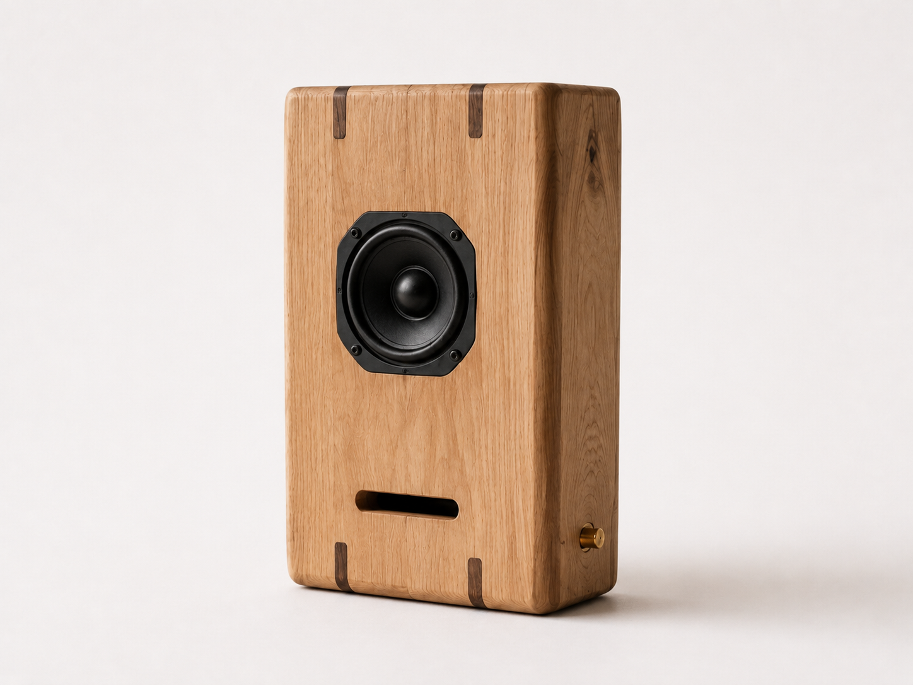
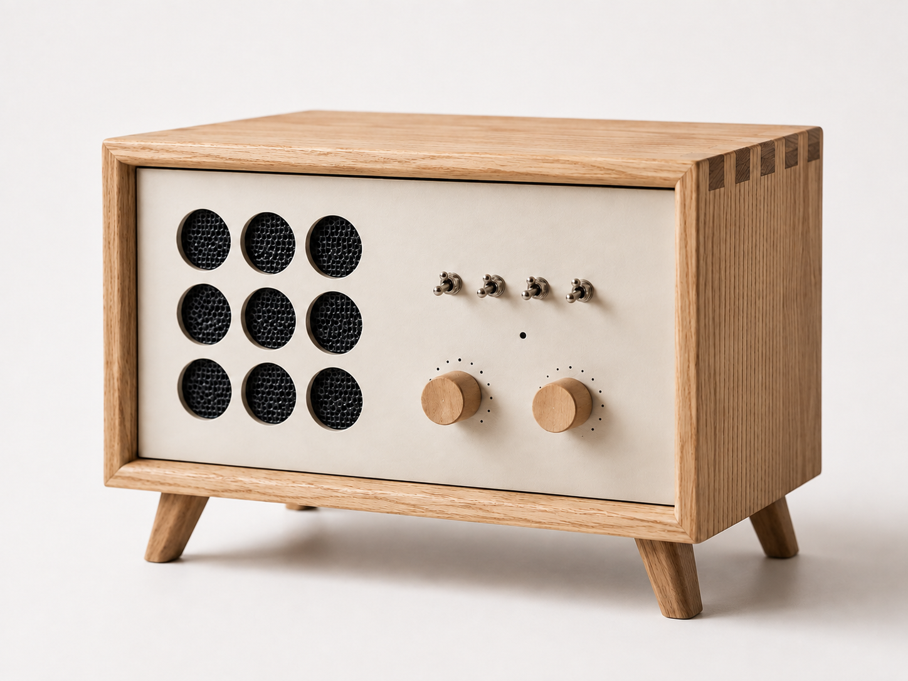

OTOA
MENU
ABOUT
WORK
PROCESS
CONTACT
WORK
INTERIOR
SPEAKER
INTERIOR
SPEAKER
WOOD AND LIGHT RESIDENCE
Tokyo, Japan
RETAIL TIMBER INTERIOR
Tokyo, Japan
INTERIOR WITH SOUND
Kanagawa, Japan
FLOOR SPEAKER 01
OTOA Studio, Tokyo

COMPACT SPEAKER 01
OTOA Studio, Tokyo

WOOD AUDIO CONSOLE
OTOA Studio, Tokyo